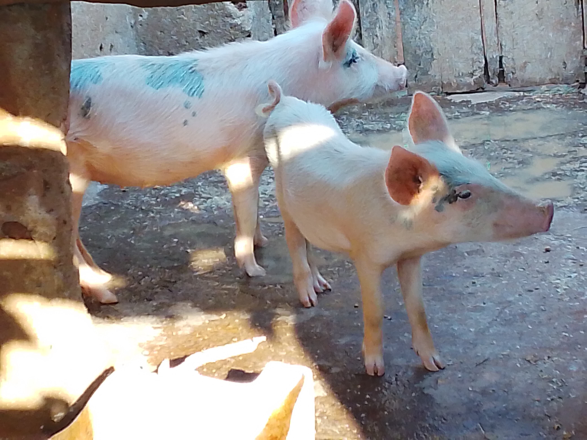
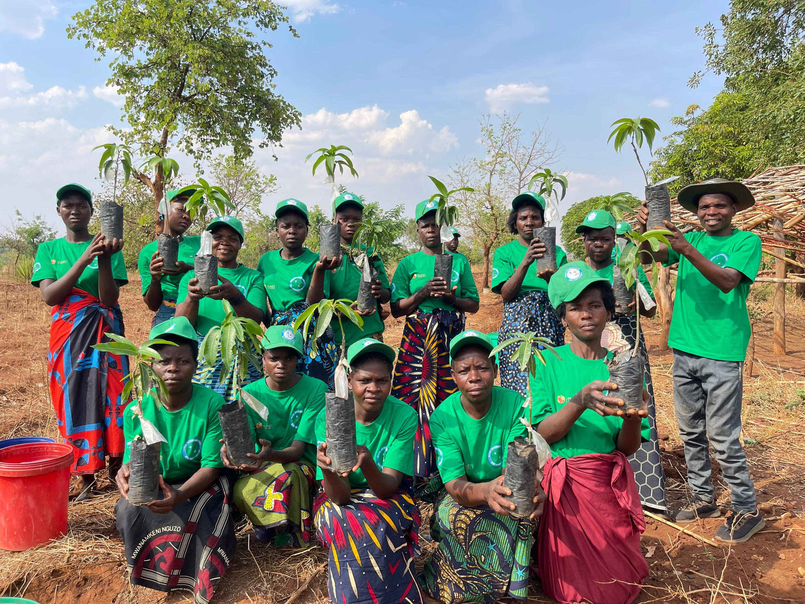
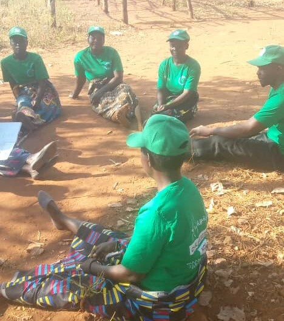

1. Safe Water Supply & Hygiene Services
We implement systemic frameworks to securely end structural water poverty. Interventions focus directly on early childhood centers, vulnerable shared compound areas, and rural schools to protect children and mothers from unsafe water resource choices.


- Deploying targeted domestic and community cluster pump setups using affordable MaTech mechanics.
- Comprehensive sanitation toolkits and hands-on maintenance orientations for family caretakers.
- Stabilizing long-term functionality by establishing active community water oversight structures.
2. Small-Scale Irrigation Configurations
To safely combat climate shocks and volatile season patterns, this pillar provides operational irrigation kits to localized youth clubs and community collectives. This opens active farming options outside standard rainfall intervals.


- Providing self-priming low-cost irrigation kits that consume minimal fuel setups.
- Empowering youth agricultural cooperatives to produce high-value food crops in dry winter months.
- Establishing practical agro-dealer linkage paths for accessing seeds and tools locally.
3. Ventilated Improved Sanitation Frameworks
This division focuses on building standard, highly stable ventilated improved family latrines. The setups are developed precisely to adapt to heavy environmental changes without leaking into nearby shallow well levels.


- Using cost-effective structural components available on regional markets to erect ventilated latrines.
- Preventing chemical and waste leakage into local water layers and community aquifers.
- Distributing easy-to-follow sanitation manuals directly to individual households.
4. Green Villages Environmental Campaign
Guided completely by core environmental stewardship values, this campaign assists community blocks in constructing reliable local defenses. We secure topsoil and promote regional biodiversity through active environmental regeneration.


- Setting up neighborhood community seed banks to securely store native seeds.
- Introducing eco-friendly honey-bee farming installations as safe income assets for families.
- Reforestation steps aimed at building secure tree shelters around rural compound circles.
5. Geospatial Information and Digital Mapping
We securely blend advanced spatial tools and data points into project review phases. This structure gives evaluating partners clear insight and tracks live development results with precision.


- Applying accurate remote sensing frameworks to scan structural updates and detect facility gaps.
- Tracking historical operation lifespans of local assets to map preventative repair runs.
- Rendering open data summaries for collaborative coordination teams and tracking bodies.